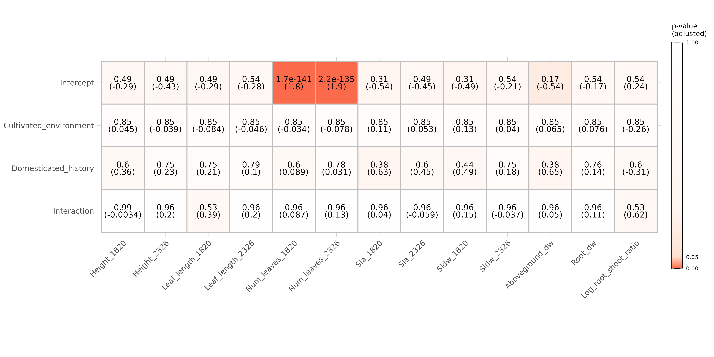
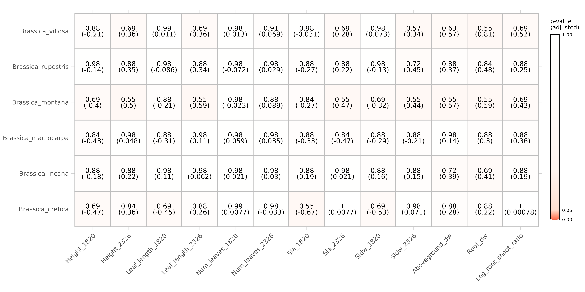

Brassicas_2021_summarized_results
Benjamin A Taylor
25/09/2021
This markdown document summarizes the principal results of the Brassica project generation 2 analyses. Analyses are not performed within this document; prior to running this file, the results should be generated by running the two other .Rmd files in this repository: “Brassicas_2021_morphology.Rmd” and “Brassicas_2021_rnaseq.Rmd”.
Work package 1: Comparing domesticates to their wild progenitors
For this work package, we wish to compare wild progenitor species to modern domesticates. For Brassica, the comparison is between domesticated B rapa with wild B rapa, while for Raphanus the comparison is between R raphanistrum (wild) and all other Raphanus samples, all of which appear to be domesticated.
Brassica gene expression
For the gene expression analysis, out model design is:
\[gene expression \sim domestication + treatment + domestication*treatment\] Results summary (number of genes and GO terms enriched for each dependent variable) for wild vs domesticated Brassica rapa:
| DEGs | GO_terms | |
|---|---|---|
| Domesticated_bias | 2073 | 55 |
| Wild_bias | 1818 | 85 |
| Unstressed_bias | 9 | 15 |
| Stressed_bias | 16 | 13 |
| Interaction | 41 | 25 |
We can see from this that a great many genes are associated with domestication, but few with stress. 41 genes show an interaction between treatment and domestication, and are therefore of particular interest. Summary of the 25 GO terms associated with these interaction genes:

We can also plot these interaction terms to get a better idea of what the reaction norms look like for wild and domesticates accessions respectively:

Eyeballing these plots, there’s no obvious trend in terms of increases or decreases in plasticity for wild vs domesticated accessions. Let’s run statistical tests to check whether this is actually the case:
## [1] "Interaction genes with higher plasticity in wild: 17"## [1] "Interaction genes with higher plasticity in domesticate: 24"| Chi.squared | Paired.Wilcoxon | Paired.t.test | |
|---|---|---|---|
| p-value | 0.274 | 0.221 | 0.786 |
From this we must conclude that, in Brassica rapa, genes have not changed systematically in their plasticity in the course of domestication.
Raphanus gene expression
Results summary (number of genes and GO terms enriched for each dependent variable) for wild vs domesticated Raphanus:
| DEGs | GO_terms | |
|---|---|---|
| Domesticated_bias | 533 | 48 |
| Wild_bias | 179 | 64 |
| Unstressed_bias | 76 | 34 |
| Stressed_bias | 53 | 27 |
| Interaction | 98 | 49 |
Compared to Brassica, we find that fewer genes are associated with domestication, but more with stress. 98 genes show an interaction between treatment and domestication, and are therefore of particular interest. Summary of the 49 GO terms associated with these interaction genes:

We can also plot these interaction terms to get a better idea of what the reaction norms look like for wild and domesticates accessions respectively:

Eyeballing these plots, it looks like wild accessions tend to exhibit higher gene expression plasticity than domesticated accessions. Let’s run statistical tests to check whether this is actually the case:
## [1] "Interaction genes with higher plasticity in wild: 69"## [1] "Interaction genes with higher plasticity in domesticate: 29"| Chi.squared | Paired.Wilcoxon | Paired.t.test | |
|---|---|---|---|
| p-value | 5.33e-05 | 4.5e-06 | 0.15 |
While the t-test is less conclusive, both the chi-squared and paired Wilcoxon tests strongly suggest that plasticity is higher in wild accessions than in domesticated ones. However, this result might be misleading, because the values for the Raphanus domesticates combine multiple different species, which may have resulted in depressed estimates of gene expression plasticity. For a more robust analysis, we need to run the analysis for each Raphanus domesticate individually.
| species | up_wild | up_dom | chisq | t | wilcox |
|---|---|---|---|---|---|
| Raphanus raphanistrum munra | 59 | 39 | 0.043400 | 0.0484 | 0.0008655 |
| Raphanus sativus | 67 | 31 | 0.000276 | 0.0928 | 0.0005876 |
| Raphanus sativus var. caudatus | 66 | 32 | 0.000594 | 0.7170 | 0.0002253 |
Again, while the t-test results are less conclusive, per the Wilcox and Chi-squared tests it’s clear that for interaction genes plasticity is higher overall in the wild progenitor than in modern domesticates. We must therefore conclude that domestication has selected for decreased gene expression plasticity in radishes.
Brassica phenotypic expression
Here, we perform a similar analysis to above but using phenotypic traits instead of genes as the response variable. In each case we use a gaussian linear model, except for leaf number which is analysed using a Poisson model since it’s a discrete trait. Here we include random effects, so the model design is:
\[expression \sim domestication + treatment + domestication*treatment + (1|population) + (1|parental\ standardization\ status)\]
Here we plot the p-values and coefficients (in parentheses) for each independent effect for each trait. FDR correction is applied across each row and response variables are scaled prior to analysis, again with the exception of those modeled using a Poisson distribution.

Our primary interest is in the bottom row, since significant terms here will indicate traits that exhibit differential plasticity in domesticated vs wild rapa. However, none of these interaction terms are significant. Nor, indeed, are any traits significantly different between wild and domesticated rapa overall, which is very surprising! However, we’re forced to conclude that none of the traits examined appear to have shown a shift in plasticity in the course of Brassica rapa domestication.
Raphanus phenotypic expression

Again, we reach the unfortunate conclusion that there seem to be no significant terms in any of the models. Might we find some if we subset by the separate Raphanus domesticates, rather than combining them all into one? Below we plot the interaction terms only for each comparison:

To the contrary, subsetting by domesticate further erases any traces of interaction significance that we might have found for Raphanus (not least because we have to apply FDR correction over 3 x 13 = 39 comparisons here).
We must therefore conclude that domestication hasn’t selected for greeater phenotypic plasticity in domesticates relative to their wild progenitors.
Work package 2: Comparing wild progenitors to never-domesticated wild species
We now wish to ask a different question: do ‘progenitor species’ (i.e. those that were the original targets of human selection) differ systematically in their patterns of gene and phenotypic expression from wild species that were never domesticated? We are particularly interested in knowing whether progenitor species express greater phenotypic plasticity than their never-domesticated relatives, since this could suggest that earty human farmers either intentionally or inadvertently targeted species that were particularly receptive to the benefits of cultivation. Unfortunately, for Raphanus we have no data for non-domesticated wild species, so this analysis will be restricted to Brassica, comparing wild Brassica rapa to a number of never-domesticated Brassicas.
Gene expression
We’ll begin with the results of a DESeq2 model as before, except that instead of comparing wild to domesticated, we’ll compare progenitors (wild Brassica rapa) to non-progenitors (all other wild Brassicas).
| DEGs | GO_terms | |
|---|---|---|
| Domesticated_bias | 8710 | 53 |
| Wild_bias | 9520 | 75 |
| Unstressed_bias | 9 | 40 |
| Stressed_bias | 11 | 10 |
| Interaction | 63 | 30 |
The results here are similar to those we generated when comparing the wild and domesticated Brassica rapas: many genes dividing the different species, few differing with treatment, and a mid-sized number with interaction terms. Again, our primary interest is in these interaction genes, since these are those that show differential plasticity between the progenitor and its never-domesticated relatives. Plotting the 12 genes with the lowest p-vlaues for this comparison:

Eyeballing these plots, there’s surprisingly little difference in the reaction norms for progenitor and non-progenitor accessions, so it seems likely that the effect sizes we’re observing here are quite low despite the small p-values. Nonetheless, we can check whether there’s an overall trend in terms of increases/decreases in plasticity between the two groups:
## [1] "Interaction genes with higher plasticity in progenitor: 36"## [1] "Interaction genes with higher plasticity in other wilds: 27"| Chi.squared | Paired.Wilcoxon | Paired.t.test | |
|---|---|---|---|
| p-value | 0.274 | 0.221 | 0.786 |
We find no effect here, but recall that this analysis combines multiple different wild Brassicas, which could depress any effect sizes we find. To be certain, we now subset by wild Brassica species:
| species | up_otherwild | up_progenitor | chisq | t | wilcox |
|---|---|---|---|---|---|
| Brassica montana | 35 | 28 | 0.3780 | 0.333 | 0.1311542 |
| Brassica cretica | 31 | 32 | 0.9000 | 0.809 | 0.6538502 |
| Brassica macrocarpa | 32 | 31 | 0.9000 | 0.658 | 0.2543378 |
| Brassica rupestris | 25 | 38 | 0.1010 | 0.894 | 0.2216964 |
| Brassica incana | 24 | 39 | 0.0588 | 0.431 | 0.3571543 |
| Brassica villosa | 29 | 34 | 0.5290 | 0.848 | 0.9918065 |
Even when subsetting, it’s clear that there is no overall trend for the Brassica progenitor species to have higher or lower gene expression plasticity in interaction genes when comapred to never-domesticated Brassicas.
Phenotypic expression
What about phenotypes- does wild B rapa exhibit increased phenotypic plasticity relative to its never-domesticated relatives, upon which human ancestors might have selected?

Here we see a more interesting set of results: many traits differ between wild Rapa and the other wild species, and a few traits have near-significant interaction terms: height, above-ground dry weight, and root dry weight. Perhaps these interaction terms will become more clearly significant (or non-significant) if we subset the never-domesticated wilds by species instead of combining them all into one?

Alas, to the contrary: when we subset, we lose any hint of significance in the interaction terms. Note that these values will once again have been hit hard by FDR correction, since we have to correct for 13x6=78 comparisons. Nonetheless, we’re forced to conclude that Brassica rapa was not selected for its uniquly high plasticity at the level of either gene expression or phenotypic expression.